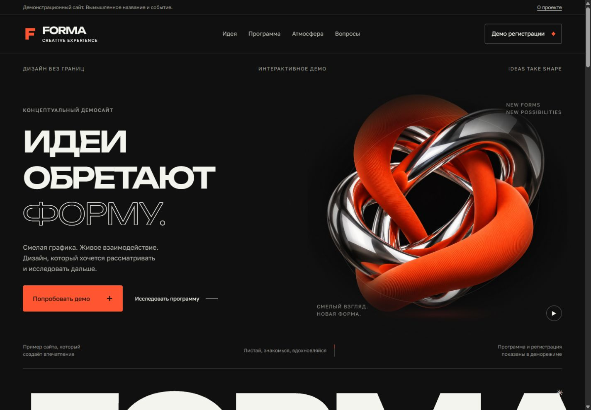
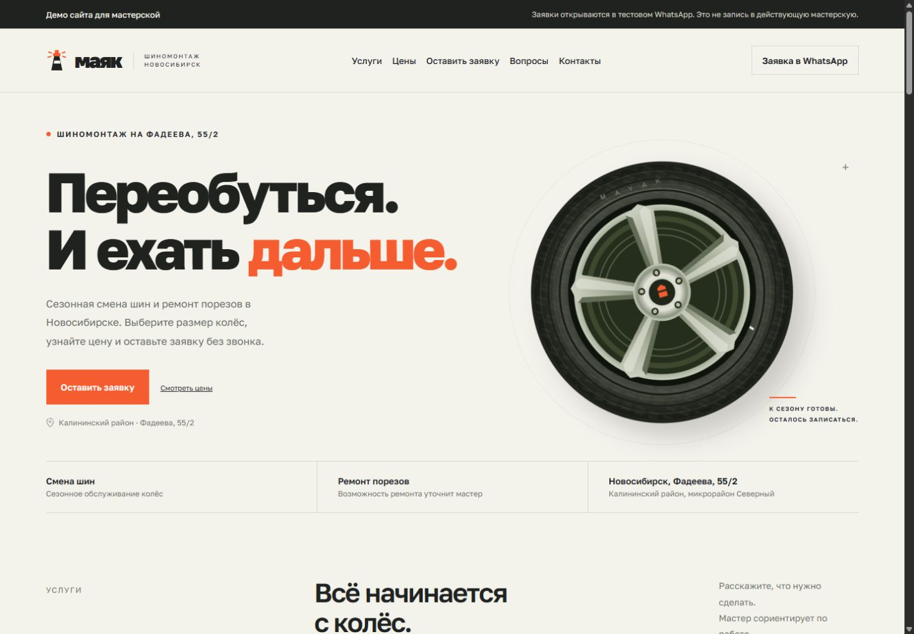
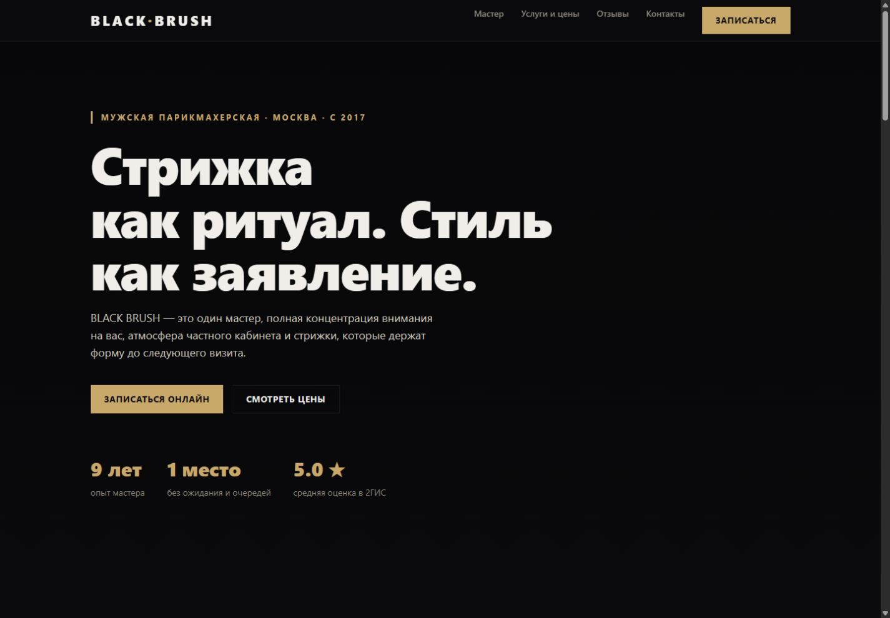
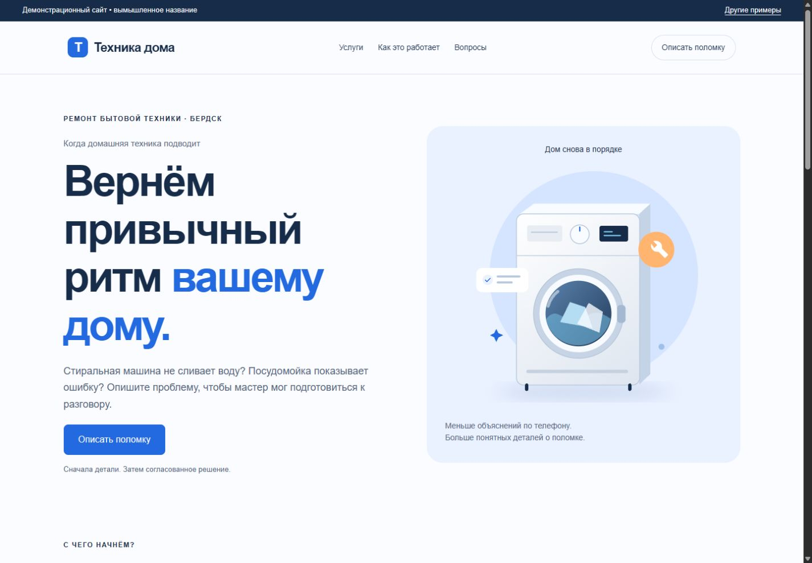
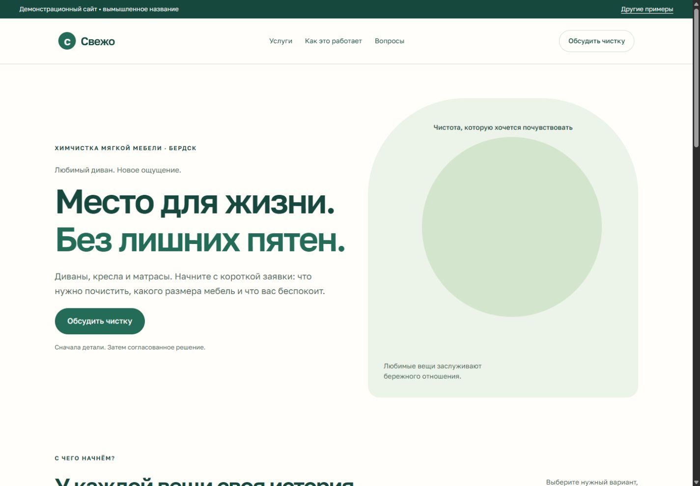
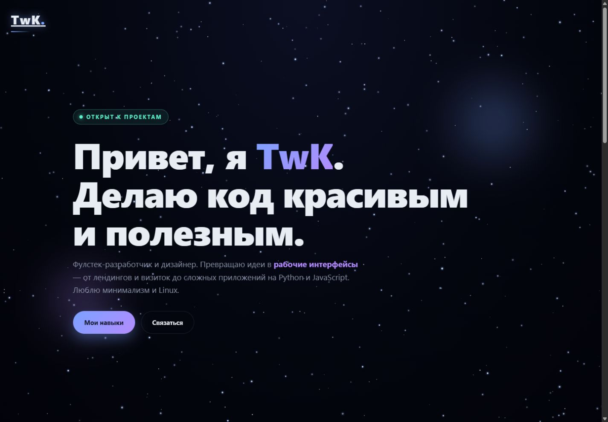

Креативный концептДемопроект
FORMA
Выразительная типографика, хромированная графика и интерактивная демопрограмма.
Веб-проекты Тимофея
Разные задачи. Разный дизайн.
Одна подборка, которую удобно
смотреть, пробовать и отправлять.

Коллекция проектов
Это живые сайты, а не макеты.
Открывайте страницы, изучайте детали
и проверяйте интерактив.
Показано проектов: 6
Выразительная типографика, хромированная графика и интерактивная демопрограмма.

Посмотреть сайтУслуги, прайс и удобная заявка с данными автомобиля в WhatsApp.

Посмотреть сайтТёмная палитра, крупные фотографии и подача услуг салона.

Посмотреть сайтКлиент выбирает технику, описывает поломку и собирает сообщение мастеру.

Посмотреть сайтСпокойный визуальный стиль и заявка с типом мебели и деталями загрязнения.

Посмотреть сайтЛичный сайт: знакомство с разработчиком, направления работы и контакты.
Попробуйте другое название или направление.
Одна ссылка вместо шести
Сохраните хаб или отправьте его тому,
кто выбирает сайт для своего дела.